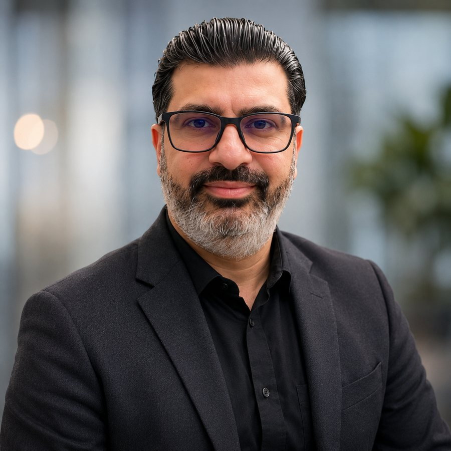

Faisal Virjee
Director of Systems Engineering
I turn complex technology into shared services that scale. For 19 years at Cox Automotive I have led the teams behind how thousands of people work: laptops, cloud desktops, mobile devices, and the security around them. When companies merge, I help them run as one.

- 30+ years
- in IT, from help desk to Director
- 19 years
- at Cox Automotive and Autotrader
- ~29 people
- 13 employees plus a ~16-engineer partner pod
- ~33,000
- managed endpoints across Windows and Mac
From server engineer to enterprise platform leader
I joined Autotrader.com in 2007 as a Windows server engineer. As Autotrader, Manheim, and Dealertrack came together under Cox Automotive, I was asked to build the shared-service engineering team that would run endpoints for all of them. Since 2023 I have led that team as Director of Client Platform Engineering.
My job is to turn a pile of different tools, images, and habits into one platform people can rely on. That means roadmaps, standards, vendor partnerships, and a bench of leaders who can run it without me in the room.
I like the unglamorous middle of technology: the integration, the migration, the standard that finally lets ten teams work the same way.
Selected results
Cloud desktops, from ~250 users to ~3,000
VDI grew as every contractor moved into it and Windows 365 adoption took off. I standardized the platform on Azure Virtual Desktop, built with Terraform, so growth did not mean sprawl.
Least-privilege rollout targets met
Local-admin removal, removable-media controls, and just-in-time privileged access across about 36,700 users. The few exceptions sit in groups the security team has approved.
One help desk and one image after seven acquisitions
One number, one portal, one standard device image, and one way to manage Windows and Mac. The same playbook helped bring Dealertrack, FleetNet America, and Fullpath onto Cox platforms.
Also on the board: about $190K saved every year by consolidating mobile device management onto one platform, and a move off SCCM that cut server and data-center cost.
How I lead
Standardize first, then scale.
One image, one help desk, one management platform. Complexity is the default. A standard is a choice someone has to make and keep making.
Translate before you transform.
Business, security, and operations describe the same problem in three languages. I put it into one plan before anyone builds anything.
Grow leaders, not dependencies.
I have developed three engineers into people leaders and promoted three more through senior levels. A platform is only as durable as the people who run it.
Treat partners like teammates.
Vendors and contractors get clear outcomes, visible commitments, and honest reviews. That is how a ~16-engineer pod works as part of the team.
Nineteen years at one company, six roles
2023 to todayDirector, Client Platform EngineeringCox Automotive
- Lead Windows and Intune, virtual endpoints, Mac and mobile (including rugged auction devices), enterprise print, and workplace A/V: 13 employees plus a ~16-engineer Accenture pod.
- Scaled cloud desktops about 12x on a standardized Azure Virtual Desktop platform.
- Led the least-privilege program and the rollout of CrowdStrike and Qualys with the enterprise security team.
- Moved device management from Workspace ONE to Intune (~$190K a year saved) and retired SCCM.
- Supported endpoint onboarding for acquisitions including FleetNet America and Fullpath.
2014 to 2022Senior Manager, Client Platform EngineeringCox Automotive
- Selected to create the global shared-service engineering team as Autotrader Group and Manheim came together, then extended it to Dealertrack and later acquisitions.
- Unified a single image and hardware platform, consolidated client management, and brought on-premises and then cloud VDI online.
- When the pandemic hit, remote onboarding was already proven. We shipped hardware and instructions, and people were fully managed and productive with no IT hands-on.
- Introduced shared roadmaps, visible intake, and Kanban practices across teams.
2010 to 2014Associate Manager to Interim Director, End User ComputingAutotrader Group
- As Interim Director (Senior Manager title), led about 40 people and a $4.5M hardware budget across support, client engineering, and procurement for Autotrader and its acquired brands.
- Consolidated support after seven acquisitions into one help desk, with unified desktop teams and one device image.
- Before that, as Associate Manager and then Manager, ran Windows Infrastructure Services, the server-side operations team: patching, escalation, and service ownership.
2007 to 2010Senior Systems EngineerAutotrader.com
- Engineered and supported 800+ physical servers, 150+ VMware hosts, and 1,200+ virtual machines across three data centers.
- Led the virtualization of the Autotrader Publishing environment into Autotrader.com.
- Designed Citrix and thin-client solutions and work-from-home continuity for customer-operations agents.
2000 to 2007Manager, Network AdministrationSaxon Capital, a Morgan Stanley credit subsidiary
- Led systems engineers through Active Directory and Exchange upgrades and a Nortel-to-Cisco network core replacement.
- Designed a new data center and moved into it with zero downtime.
- Put Sarbanes-Oxley compliance processes in place.
1994 to 2000PC/LAN support to senior systems engineerConsulting and client organizations, Georgia and Virginia
- Moved from PC and LAN support through LAN administration, senior systems engineering, team lead, and assistant technical manager roles.
Capabilities
Platforms
- Microsoft Intune and Windows 365
- Azure Virtual Desktop and Omnissa Horizon
- Jamf, SCCM, and Workspace ONE
- Terraform
Security and telemetry partnerships: CrowdStrike, Qualys, CyberArk, Entra ID, Nexthink.
Leadership
- Organization design and talent development
- Vendor and managed-services governance
- Roadmaps and Agile delivery
- Funding requests and cost optimization
Integration
- Endpoint onboarding for acquired companies
- Device-management migrations (Jamf, SCCM)
- Domain migration and Group Policy
- Shared-service design
Off the clock
The same habits show up outside work: collect carefully, build what is missing, and keep the numbers honest.
The collector
I run Blades of Chaos, a small comic-book resale business. I buy and sell through Whatnot, conventions like NYCC, and estate sales. About a fifth of the inventory is graded and the rest is raw, which makes for a good lesson in sorting signal from noise.
The builder
When a tool does not exist, I build it: single-file web apps for tracking inventory and modeling rental properties, plus 3D printing and miniature painting for the hands-on side.
The investor
I invest in and help develop residential real estate around Georgia with trusted partners. It is project management with a mortgage attached.
The player
VR fitness games and handheld gaming keep me moving, and they give me a free look at where consumer hardware is heading next.
Education and leadership development
Education
B.S., Management Information Systems, Kennedy-Western University (1998 to 2000)
A.S., Business Administration, DeKalb College (now Georgia State University Perimeter College)
Leadership programs
Asian Management Accelerator, McKinsey Academy (2022 to 2023)
Business Relationship Management Professional (2016)
Strategic Business Management Leadership Program for Directors (2014)
Cox Leadership Shadowing Program with the VP of Technology (2013)
Building, merging, or modernizing an enterprise platform?
I am always glad to compare notes with leaders working on integration, endpoint strategy, or shared services. Send a note and I will reply.